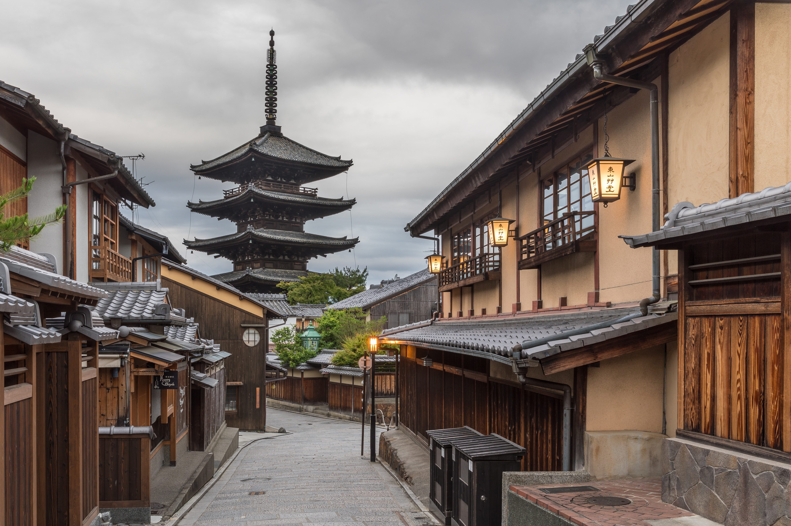

Top Things to See

Mount Fuji — Japan's sacred and iconic peak rising to 3,776 metres, a symbol of perfection visible from Tokyo on a clear winter's day

Tokyo — a city of layered realities, where Shibuya's famous crossing pulses with millions, and hidden alleyways harbour the world's finest ramen

Kyoto's temple gardens — moss carpets and stone lanterns, where time slows and the aesthetic ideals of wabi-sabi find their purest expression